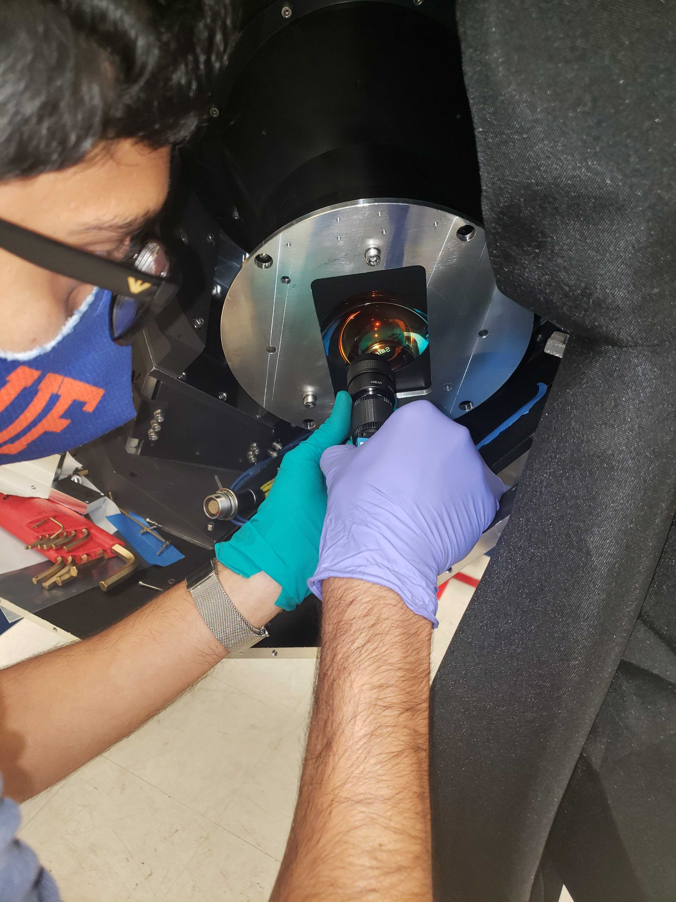

Instrumentation

The bulk of my efforts in the lab are currently spent working on MIRADAS, a facility-class near-IR spectrograph that will be used with the world's largest optical telescope, the Gran Telescopio Canarias (GTC). These efforts include (but are certainly not limited to) fabrication of passive MIRADAS components, optical alignment, and testing key mechanisms.
I am also working on the development of PolyOculus, a novel modular telescope array concept that will enable large-area-equivalent telescopes for relatively low-cost. Underpinning this approach is the photonic lantern, an optical device that couples multiple input fibers into a single output with coupling efficiencies vastly superior to traditional fiber coupling methods.